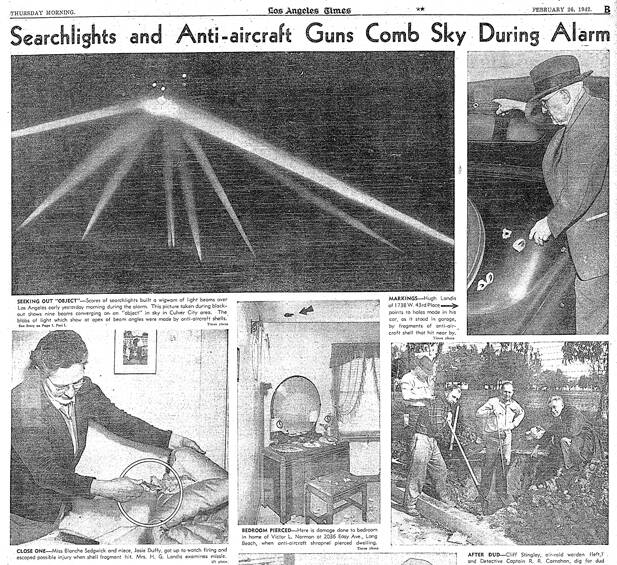

Battle of Los Angeles
Los Angeles, California, 1942

In the early hours of February 25, 1942, less than three months after Pearl Harbor, anti-aircraft guns fired over Los Angeles at a feared Japanese air raid. Five civilians died during the barrage. Navy Secretary Frank Knox called it a "false alarm," and the Air Force's historians later blamed "war nerves" set off by a lost weather balloon. UFO writers often show a Los Angeles Times photo of converging searchlights as a craft caught in the beams, but the photo was heavily retouched before publication, and white paint added to mark where the beams met was later misread as a UFO. 1
Open in the interactive Watcher
Sources
- Battle of Los Angeles Wikipedia